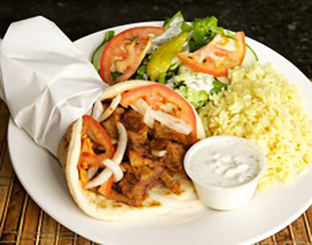

14057 Stowe Drive STE 104
Poway, CA 92064
(858)668-1717
Monday - Saturday
10:00 AM - 9:00 PM
Sunday
Closed
15817 Bernardo Center Drive
San Diego, CA 92127
(858)451-9992
Monday - Saturday
10:00 AM - 9:00 PM
Sunday
Closed
Thinly sliced combo of spicy beef & lamb cooked on a vertical rotisserie served in a pita with tomatoes & onions. Combo comes with your choice of 2 sides : fries, tossed salad, or rice.
Victor´s Kafé does full service catering, which provides you with utensils, chafing trays, table linens and are always open for requests. Victor´s Kafé caterings are ideal for corporate events, weddings, and other special events.
If you are looking for any fundraiser, Victors kafe allows one easiest and innovative way to earn money for your group. Just dine in or order to go at Victor’s kafe, and we are happy to share 15% of sales for all fundraisers. All fundraisers are tracked by a Victor’s Fundraising Code that can be used at either location or online.